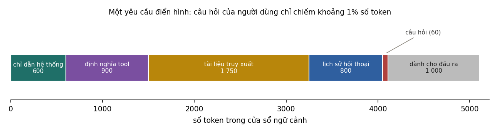
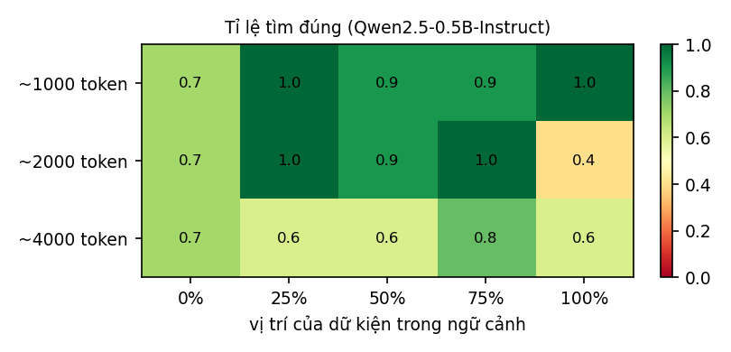

5Quản lý ngữ cảnh#
Quay lại bảng chi phí ở Mục 2.5. Trong 3 210 token đầu vào của một yêu cầu RAG, chỉ dẫn hệ thống mà ta viết tay theo cách của Chương 4 chiếm 600 token, câu hỏi của người dùng chiếm 60 token, còn 2 550 token kia là tài liệu truy xuất và lịch sử hội thoại do ứng dụng ghép vào. Với agent, tỉ lệ còn lệch hơn nữa, vì mỗi bước thêm vào ngữ cảnh một lời gọi tool và kết quả của nó. Chất lượng câu trả lời phụ thuộc vào toàn bộ những token đó chứ không riêng phần chỉ dẫn được viết cẩn thận, và việc quyết định token nào được có mặt là chủ đề của chương này.
5.1Khái niệm context engineering#
Anthropic (2025) định nghĩa context engineering là tập hợp các chiến lược chọn lọc và duy trì tập token tối ưu trong ngữ cảnh ở mỗi lần suy luận, gồm mọi thông tin đi vào ngữ cảnh chứ không riêng prompt. Prompt engineering tập trung vào việc viết chỉ dẫn, nhất là chỉ dẫn hệ thống; context engineering quản lý toàn bộ trạng thái của ngữ cảnh: chỉ dẫn, tool, dữ liệu bên ngoài, lịch sử, và cách tất cả những thứ đó thay đổi qua các bước. Giáo trình gọi việc này là quản lý ngữ cảnh.
Khác biệt giữa hai khái niệm thấy rõ nhất ở agent. Với một lời gọi đơn lẻ, ngữ cảnh được dựng một lần. Với một agent chạy 30 bước, mỗi bước thêm vào ngữ cảnh một lời gọi tool và một kết quả, có khi dài vài nghìn token. Sau vài chục bước, phần lớn ngữ cảnh là kết quả tool cũ không còn liên quan, và câu hỏi thiết kế chính trở thành: ở bước này mô hình cần thấy những gì, còn những gì nên bỏ ra, tóm tắt lại hoặc để bên ngoài cho tới khi cần.
Cùng tài liệu đó nêu một nguyên tắc chung: tìm tập token nhỏ nhất chứa nhiều thông tin liên quan nhất cho nhiệm vụ. Mỗi token thêm vào đều tốn tiền, tăng độ trễ, và như Mục 5.3 sẽ cho thấy, có thể làm mô hình dùng thông tin kém đi.
5.2Lớp ngữ cảnh và các nguồn ngữ cảnh#
Trong một ứng dụng được thiết kế tốt, việc dựng ngữ cảnh trước mỗi lần gọi mô hình thường do một thành phần riêng đảm nhận, có thể gọi là lớp ngữ cảnh (context layer). Bảng dưới liệt kê các nguồn mà lớp này lấy thông tin, cùng điều cần lưu ý với từng nguồn.
| Nguồn | Nội dung | Ghi chú |
|---|---|---|
| Chỉ dẫn hệ thống | vai trò, quy tắc, định dạng | ổn định, đặt đầu để dùng prompt caching |
| Định nghĩa tool | tên, mô tả, lược đồ tham số | nhiều tool tốn nhiều token và làm mô hình khó chọn |
| Tài liệu truy xuất | đoạn văn liên quan tới yêu cầu | chọn bằng truy xuất và bộ lọc metadata (Chương 8) |
| Kết quả tool | dữ liệu trả về từ API, cơ sở dữ liệu, công cụ | có thể rất dài; cần cắt gọn |
| Lịch sử hội thoại | các lượt trước | tăng dần theo thời gian |
| Bộ nhớ dài hạn | sở thích của người dùng, dữ kiện đã học | lấy chọn lọc theo mức liên quan (Mục 5.4) |
| Resource qua MCP | tệp, bản ghi do server cung cấp | Chương 10 |

Hình 3 vẽ lại yêu cầu RAG ở Mục 2.5 sau khi thêm 900 token định nghĩa tool và chừa 1 000 token cho đầu ra. Trong khoảng 5 100 token của cửa sổ, tài liệu truy xuất chiếm phần lớn nhất, còn câu hỏi của người dùng chỉ khoảng 1%; mọi phần còn lại đều do lớp ngữ cảnh quyết định.
Có hai chiến lược đưa thông tin vào ngữ cảnh. Với truy xuất trước (pre-retrieval), ứng dụng tìm các tài liệu có vẻ liên quan và đặt chúng vào ngữ cảnh trước khi gọi mô hình, như trong RAG. Với truy xuất đúng lúc (just-in-time), ngữ cảnh chỉ chứa các định danh nhẹ như đường dẫn tệp, tên bảng hay địa chỉ web, và agent tự dùng tool để tải nội dung khi thấy cần. Cách thứ hai giống cách con người làm việc: không ai đọc thuộc cả thư viện trước khi bắt đầu, mà chỉ nhớ chỗ để tìm. Nó tiết kiệm ngữ cảnh và cho agent tự khám phá, đổi lại chậm hơn vì cần thêm lời gọi tool. Nhiều hệ thống kết hợp cả hai: truy xuất trước một ít thông tin nền thiết yếu, rồi để agent tự tìm phần chi tiết.
5.3Ngữ cảnh dài và vị trí của thông tin#
Mục 2.2 đã nói rằng mô hình nhận được một triệu token không có nghĩa là nó dùng tốt mọi token trong đó. Bằng chứng được biết đến rộng rãi đầu tiên là thí nghiệm của Liu và cộng sự (2024): đưa cho mô hình một câu hỏi kèm nhiều tài liệu, trong đó chỉ một tài liệu chứa câu trả lời, rồi thay đổi vị trí của tài liệu đó. Độ chính xác cao nhất khi tài liệu đúng nằm ở đầu hoặc cuối ngữ cảnh, và giảm rõ khi nó nằm ở giữa; hiện tượng này được gọi là lost in the middle. Bộ đánh giá RULER (Hsieh và cộng sự, 2024) cho thấy với những nhiệm vụ khó hơn việc tìm một câu, độ dài ngữ cảnh mà mô hình dùng hiệu quả thường ngắn hơn nhiều so với độ dài được công bố. Báo cáo của Chroma (Hong, Troynikov và Huber, 2025) ghi nhận hiện tượng tương tự trên nhiều mô hình hiện đại và gọi nó là context rot: khi số token đầu vào tăng, khả năng nhớ lại và dùng thông tin trong ngữ cảnh giảm, kể cả với nhiệm vụ đơn giản. Có thể hình dung như sau: với token, cơ chế attention phải phân bổ trên cặp quan hệ, nên ngữ cảnh càng dài thì phần chú ý dành cho mỗi thông tin càng mỏng.
Thí nghiệm trong code/ungdung/experiments_llm.py đo hiện tượng này trên một mô hình nhỏ. Mỗi lần thử, một "đống cỏ" được ghép từ các đoạn văn ngẫu nhiên của các giáo trình tới độ dài khoảng 1 000, 2 000 hoặc 4 000 token, rồi một dữ kiện (cây kim) được chèn vào ở vị trí 0%, 25%, 50%, 75% hoặc 100% của ngữ cảnh: "Mật mã của kho lưu trữ số 37 là 5821." Mô hình Qwen2.5-0.5B-Instruct được hỏi mật mã của đúng kho đó, và câu trả lời được tính là đúng nếu chứa đúng bốn chữ số của mật mã. Mô hình được sinh tối đa 40 token, vì nó thường nhắc lại cả câu trước khi nêu con số. Mỗi ô của bảng là tỉ lệ trả lời đúng trên 10 lần thử với đống cỏ và dữ kiện khác nhau.

| Độ dài ngữ cảnh | Vị trí 0% | 25% | 50% | 75% | 100% | Trung bình |
|---|---|---|---|---|---|---|
| khoảng 1 000 token | 0,7 | 1,0 | 0,9 | 0,9 | 1,0 | 0,90 |
| khoảng 2 000 token | 0,7 | 1,0 | 0,9 | 1,0 | 0,4 | 0,80 |
| khoảng 4 000 token | 0,7 | 0,6 | 0,6 | 0,8 | 0,6 | 0,66 |
Đọc bảng theo hàng trước. Tính trên cả năm vị trí, tỉ lệ đúng giảm từ 0,90 ở khoảng 1 000 token xuống 0,80 ở 2 000 token và 0,66 ở 4 000 token, dù nhiệm vụ không đổi. Mỗi độ dài có 50 lần thử, và mức giảm từ 45/50 xuống 33/50 lớn hơn nhiều so với dao động ngẫu nhiên (kiểm định chính xác Fisher, ). Trong khi đó, 4 000 token mới chỉ bằng khoảng một phần tám cửa sổ ngữ cảnh 32 768 token của mô hình. Đó là một ví dụ nhỏ của context rot: mô hình nhận được ngữ cảnh dài nhưng dùng thông tin trong đó kém đi.
Đọc theo cột thì không thấy dạng chữ U mà Liu và cộng sự mô tả. Với mô hình và nhiệm vụ này, vị trí giữa không kém hơn đầu và cuối một cách nhất quán: ở 1 000 và 2 000 token, vị trí 50% đúng 9 trên 10 lần. Các ô thấp nhất nằm rải rác: vị trí đầu cho 0,7 ở cả ba độ dài, còn vị trí cuối ở 2 000 token chỉ đúng 4 trên 10 lần. Với 10 lần thử mỗi ô, khoảng tin cậy 95% của tỉ lệ 7/10 trải từ khoảng 0,40 tới 0,89, nên phần lớn chênh lệch giữa các ô đơn lẻ nằm trong dao động ngẫu nhiên, và một ô bất thường như 4/10 cần thêm lần thử trước khi kết luận. Liu và cộng sự đo trên các mô hình lớn hơn, với nhiệm vụ trả lời câu hỏi từ nhiều tài liệu. Hình dạng của đường cong theo vị trí phụ thuộc vào mô hình và nhiệm vụ, nên cần được đo trên chính mô hình và loại nhiệm vụ của ứng dụng.
Những kết quả này đến từ một mô hình 0,5 tỉ tham số; các mô hình lớn hiện nay tìm một câu đơn lẻ như thế tốt hơn nhiều, gần như hoàn hảo ở độ dài này. Nhưng các nghiên cứu nêu trên cho thấy sự suy giảm vẫn xuất hiện với mô hình lớn khi nhiệm vụ khó hơn: thông tin cần tìm không được diễn đạt giống câu hỏi, cần kết hợp nhiều mẩu thông tin, hoặc ngữ cảnh chứa các đoạn gây nhiễu gần giống đáp án.
Vì vậy cửa sổ ngữ cảnh lớn không phải lý do để đưa mọi thứ vào. Những thông tin quan trọng nhất, như chỉ dẫn chính và câu hỏi, nên đặt ở đầu hoặc ở cuối ngữ cảnh, và nhiều hệ thống nhắc lại nhiệm vụ ngay trước câu hỏi. Khi phải xử lý tài liệu rất dài, chia nhỏ thường cho kết quả đáng tin hơn một lần gọi với toàn bộ tài liệu: xử lý từng phần rồi tổng hợp (map-reduce), hoặc truy xuất các phần liên quan rồi mới đọc kỹ. Và chất lượng ở độ dài ngữ cảnh mà ứng dụng thật sự dùng phải được đo trên bộ đánh giá, không suy ra từ con số độ dài tối đa của mô hình.
5.4Bộ nhớ và trạng thái#
Mô hình không nhớ gì giữa các lần gọi, nên mọi "trí nhớ" của một ứng dụng đều do ứng dụng quản lý. Dạng đơn giản nhất là bộ nhớ ngắn hạn: lịch sử hội thoại gần đây được gửi lại nguyên văn trong mỗi lần gọi. Lịch sử này dài dần theo thời gian, và tới lúc vượt ngân sách thì phải cắt bớt hoặc nén. Nén ngữ cảnh (compaction) tóm tắt phần cũ thành một bản ngắn giữ lại các quyết định, dữ kiện và việc còn dang dở, rồi tiếp tục với bản tóm tắt thay cho nguyên văn. Cái khó là chọn giữ gì, vì tóm tắt quá mạnh làm mất những chi tiết mà về sau mới thấy là quan trọng.
Agent làm việc dài còn có thể tự ghi chú ra bên ngoài ngữ cảnh, gọi là ghi chú có cấu trúc (structured note-taking): một tệp danh sách việc cần làm hay một nhật ký tiến độ, được đọc lại khi cần. Cách này giúp agent làm việc liên tục qua nhiều cửa sổ ngữ cảnh. Ở tầng xa nhất là bộ nhớ dài hạn: sở thích và thông tin về người dùng, các dữ kiện đã xác nhận, được lưu trong cơ sở dữ liệu (thường kèm embedding để truy xuất theo mức liên quan) và chỉ được lấy ra khi phù hợp với yêu cầu hiện tại.
Thiết kế bộ nhớ phải trả lời bốn câu hỏi: ghi nhớ điều gì, lấy ra khi nào, cập nhật hoặc quên thế nào khi thông tin cũ không còn đúng, và người dùng có biết, xem và xoá được những gì hệ thống nhớ về họ không. Câu hỏi cuối vừa là vấn đề trải nghiệm vừa là vấn đề quyền riêng tư (Mục 11.3).
5.5Cô lập ngữ cảnh giữa các agent#
Khi nhiệm vụ lớn hơn một cửa sổ ngữ cảnh, một cách tổ chức là chia việc cho các agent con, mỗi agent có cửa sổ ngữ cảnh riêng. Một agent con có thể đọc hàng chục nghìn token tài liệu, thử nhiều hướng, rồi chỉ trả về cho agent chính một bản tóm tắt ngắn, thường cỡ một tới hai nghìn token. Nhờ vậy agent chính giữ được ngữ cảnh gọn, chứa kế hoạch và kết luận thay vì mọi chi tiết. Cách tổ chức này gọi là cô lập ngữ cảnh (context isolation).
Chia sẻ bao nhiêu ngữ cảnh giữa các agent là một quyết định thiết kế. Chia sẻ quá ít thì các agent làm trùng việc hoặc đưa ra quyết định mâu thuẫn nhau; chia sẻ quá nhiều thì mất lợi ích của việc cô lập. Mẫu thường dùng là agent chính giao cho mỗi agent con một mô tả nhiệm vụ đầy đủ, gồm mục tiêu, phạm vi, định dạng kết quả và những gì không cần làm, và agent con trả về kết quả theo đúng định dạng đó. Mục 9.6 sẽ cho số liệu về chi phí và lợi ích của hệ nhiều agent.
5.6Các kiểu hỏng của ngữ cảnh#
Breunig (2025) mô tả bốn kiểu hỏng thường gặp khi ngữ cảnh dài và được tích luỹ qua nhiều bước.
| Kiểu hỏng | Mô tả | Cách xử lý |
|---|---|---|
| Nhiễm độc ngữ cảnh (context poisoning) | một thông tin sai, ví dụ do ảo giác, lọt vào ngữ cảnh và được các bước sau dựa vào lặp đi lặp lại | kiểm tra dữ kiện trước khi ghi vào bộ nhớ; cho phép xoá hoặc sửa |
| Phân tán (context distraction) | lịch sử quá dài làm mô hình lặp lại hành động cũ thay vì suy nghĩ về bước tiếp theo | nén ngữ cảnh; giữ lịch sử gọn |
| Nhầm lẫn (context confusion) | thông tin hoặc tool không liên quan làm mô hình chọn sai | chọn tool và tài liệu theo từng nhiệm vụ thay vì đưa tất cả vào |
| Mâu thuẫn (context clash) | các phần của ngữ cảnh mâu thuẫn nhau, ví dụ thông tin cũ và thông tin cập nhật | ghi thời điểm và nguồn; loại bỏ phiên bản cũ |
Cả bốn kiểu hỏng đều khó phát hiện nếu chỉ nhìn câu trả lời cuối cùng, nhưng lại dễ thấy nếu xem được ngữ cảnh thật mà mô hình đã nhận ở từng bước. Vì vậy Chương 13 nhấn mạnh việc ghi lại đầy đủ đầu vào của mỗi lần gọi.
5.7Bảo mật và đánh giá ngữ cảnh#
Mọi thứ đưa vào ngữ cảnh đều có thể ảnh hưởng tới hành vi của mô hình, và có thể bị mô hình nhắc lại trong câu trả lời. Từ đó có hai quy tắc bảo mật. Nội dung không đáng tin, như email, trang web, tài liệu do người ngoài tạo hay kết quả của một MCP server lạ, là kênh cho prompt injection (Chương 11) và phải được đối xử như dữ liệu không tin cậy. Còn thông tin mà người dùng không được phép xem thì không được lọt vào ngữ cảnh ngay từ đầu, vì một chỉ dẫn "đừng tiết lộ" không phải là hàng rào đáng tin. Bí mật như khoá API và mật khẩu không bao giờ nên nằm trong ngữ cảnh.
Về đánh giá, nhiều lỗi của ứng dụng LLM thực chất là lỗi ngữ cảnh: thông tin cần thiết không có mặt, có mặt nhưng bị chôn giữa nhiều thông tin khác, hoặc bị cắt khi ngữ cảnh quá dài. Có ba câu hỏi nên đặt riêng cho ngữ cảnh. Câu thứ nhất là với mỗi yêu cầu trong bộ đánh giá, thông tin cần để trả lời có nằm trong ngữ cảnh không; câu này đo được bằng recall của truy xuất. Câu thứ hai là ngữ cảnh trung bình dài bao nhiêu token, và thành phần nào chiếm nhiều nhất. Câu thứ ba là nếu bỏ đi một thành phần, chẳng hạn lịch sử cũ hoặc một nửa số tool, thì chất lượng thay đổi thế nào. Thí nghiệm loại bỏ từng thành phần (ablation) như vậy thường cho thấy một phần đáng kể của ngữ cảnh không đóng góp gì, và có thể bỏ đi để giảm chi phí mà không mất chất lượng.
5.8Tóm tắt#
Quản lý ngữ cảnh là quyết định, ở mỗi lần gọi, mô hình được thấy những token nào. Phần lớn các token đó không do người viết prompt viết ra mà do lớp ngữ cảnh ghép từ tài liệu, kết quả tool, lịch sử và bộ nhớ. Ngữ cảnh càng dài thì mô hình dùng thông tin càng kém: trong thí nghiệm với Qwen2.5-0.5B-Instruct, tỉ lệ tìm đúng dữ kiện giảm từ 0,90 xuống 0,66 khi ngữ cảnh tăng từ khoảng 1 000 lên 4 000 token. Bộ nhớ của ứng dụng gồm lịch sử ngắn hạn, bản nén, ghi chú bên ngoài và bộ nhớ dài hạn, còn việc chia việc cho agent con giữ ngữ cảnh của agent chính gọn. Ngữ cảnh hỏng theo những kiểu riêng, chỉ thấy được khi ghi lại đầu vào thật của từng bước, và mọi nội dung trong ngữ cảnh đều có thể bị mô hình làm theo hoặc nhắc lại.
Trong các nguồn ngữ cảnh, tài liệu truy xuất thường chiếm nhiều token nhất, và chất lượng của nó quyết định mô hình có đủ thông tin để trả lời hay không. Truy xuất tốt bắt đầu từ cách biểu diễn nghĩa của văn bản bằng vector, chủ đề của Chương 6.
Tự kiểm tra
3 câu. Chọn đáp án để xem ngay lời giải thích.
1Context engineering khác prompt engineering ở chỗ nào?
Vì sao: Ngữ cảnh gồm chỉ dẫn, định nghĩa tool, tài liệu truy xuất, kết quả tool, lịch sử và bộ nhớ; với agent, nó thay đổi sau mỗi bước (Mục 5.1).2Hiện tượng "lost in the middle" nói gì?
Vì sao: Liu và cộng sự (2024) ghi nhận hiện tượng này; Mục 5.3 đo trên một mô hình nhỏ với các vị trí và độ dài khác nhau.3Vì sao agent con trong hệ nhiều agent giúp quản lý ngữ cảnh?
Đã trả lời 0/3